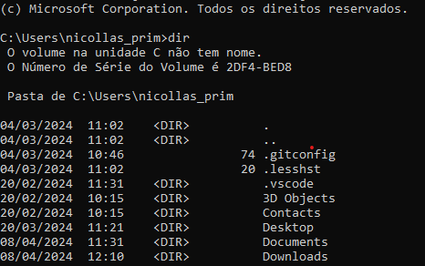

A interface do sistema operacional é a forma pela qual os usuários interagem e controlam o sistema. Existem duas principais interfaces CLI (Command Line Interface) e GUI (Graphical User Interface). A CLI permite que os usuários interajam com o sistema através de comandos de texto inseridos no terminal. Exemplos incluem o Prompt de Comando no Windows e o Terminal no Linux. Por outro lado, a GUI oferece uma interface gráfica, permitindo que os usuários interajam com o sistema através de ícones, janelas e menus visuais. Exemplos comuns são o ambiente de trabalho do Windows e as interfaces gráficas de desktop em sistemas Linux, como GNOME e KDE. Enquanto a CLI é geralmente mais rápida e poderosa para usuários experientes, a GUI é mais amigável para iniciantes e oferece uma interação mais intuitiva.
CLI e GUI
